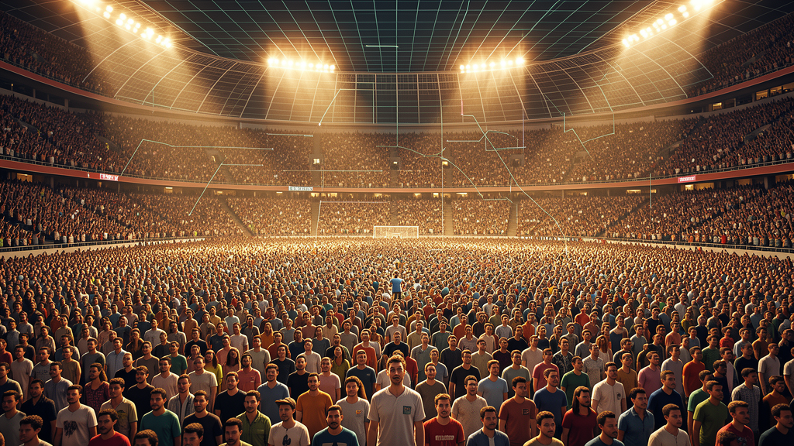
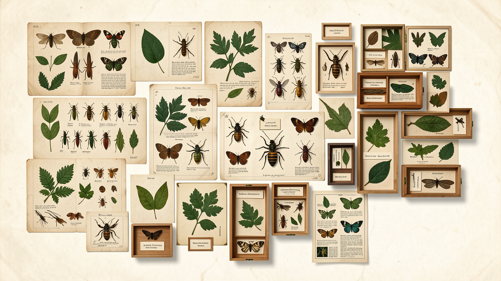

Bluesky Firehose
Every new public post and reply, arriving faster than it can be read.
A small collection of public datasets whose administrative or technical purpose leaves room for another kind of reading. Each page describes the material and proposes questions that could become an artwork, a research method, a game, or a way of looking.
Every new public post and reply, arriving faster than it can be read.

Thousands of people at once, preserved as a navigable field of tiny portraits.

Natural-history specimens turned into searchable records, coordinates, dates, and images.
Institutional reports documenting the small, strange failures of zoo containment.
Handwritten digits transformed into a foundational visual vocabulary for machine learning.